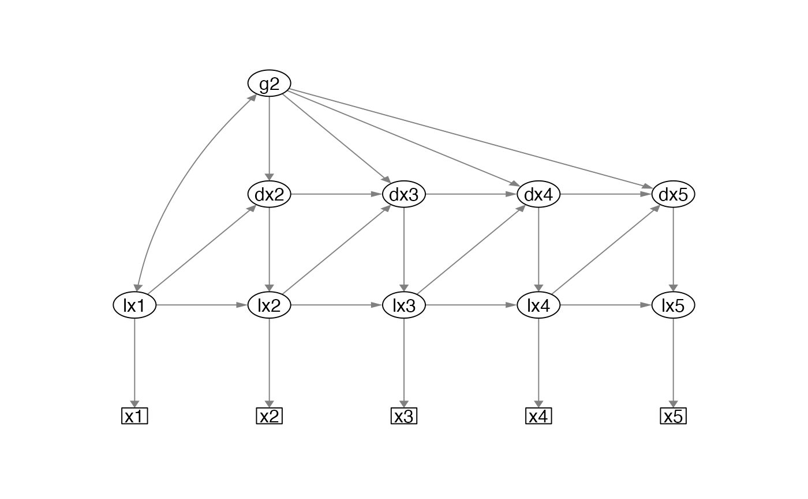

R/plot_lcsm.R
plot_lcsm.RdPlot simplified path diagram of univariate and bivariate latent change score models
plot_lcsm( lavaan_object, layout = NULL, lavaan_syntax = NULL, return_layout_from_lavaan_syntax = FALSE, lcsm = c("univariate", "bivariate"), lcsm_colours = FALSE, curve_covar = 0.5, what = "path", whatLabels = "est", edge.width = 1, node.width = 1, border.width = 1, fixedStyle = 1, freeStyle = 1, residuals = FALSE, label.scale = FALSE, sizeMan = 3, sizeLat = 5, intercepts = FALSE, fade = FALSE, nCharNodes = 0, nCharEdges = 0, edge.label.cex = 0.5, ... )
| lavaan_object | lavaan object of a univariate or bivariate latent change score model. |
|---|---|
| layout | Matrix, specifying number and location of manifest and latent variables of LCS model specified in |
| lavaan_syntax | String, lavaan syntax of the lavaan object specified in |
| return_layout_from_lavaan_syntax | Logical, if TRUE and |
| lcsm | String, specifying whether lavaan_object represent a "univariate" or "bivariate" LCS model. |
| lcsm_colours | Logical, if TRUE the following colours will be used to highlight different parts of the model: Observed variables (White); Latent true scores (Green); Latent change scores (Blue) ; Change factors (Yellow). |
| curve_covar | See semPaths. |
| what | See |
| whatLabels | See semPaths. "label" to show edge names as label, "est" for parameter estimates, "hide" to hide edge labels. |
| edge.width | See semPaths. |
| node.width | See semPaths. |
| border.width | See semPaths. |
| fixedStyle | See semPaths. |
| freeStyle | See semPaths. |
| residuals | See semPaths. |
| label.scale | See semPaths. |
| sizeMan | See semPaths. |
| sizeLat | See semPaths. |
| intercepts | See semPaths. |
| fade | See semPaths. |
| nCharNodes | See semPaths. |
| nCharEdges | See semPaths. |
| edge.label.cex | See semPaths. |
| ... | Other arguments passed on to semPaths. |
Plot
Sacha Epskamp (2019). semPlot: Path Diagrams and Visual Analysis of Various SEM Packages' Output. R package version 1.1.1. https://CRAN.R-project.org/package=semPlot
lavaan_syntax_uni <- fit_uni_lcsm(data = data_bi_lcsm, var = c("x1", "x2", "x3", "x4", "x5"), model = list(alpha_constant = TRUE, beta = TRUE, phi = TRUE), return_lavaan_syntax = TRUE, return_lavaan_syntax_string = TRUE) lavaan_object_uni <- fit_uni_lcsm(data = data_bi_lcsm, var = c("x1", "x2", "x3", "x4", "x5"), model = list(alpha_constant = TRUE, beta = TRUE, phi = TRUE)) plot_lcsm(lavaan_object = lavaan_object_uni, what = "cons", whatLabels = "invisible", lavaan_syntax = lavaan_syntax_uni, lcsm = "univariate")